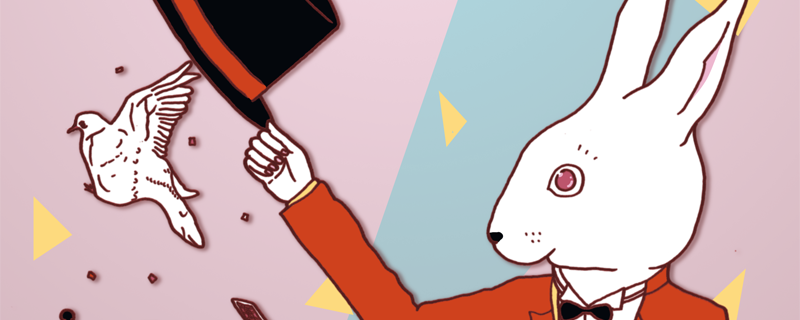
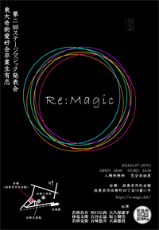

第二回 Re: magic は 2018 年 1 月 7 日（日曜日）＠西東京市民会館です。
マジックサークルは引退したけど、マジックは続けたい...
そんなマジック好きが文字通り「もう一度マジックを！」と結集してできたのが、Re: magic です。
東京大学奇術愛好会 OBOG による世代を超えたマジックショー。
歳は取ったけど、エネルギーとマジック愛だけは若いもんに負けませんよ！！
マジックなしでは生きていけないわたしたちの生き様をとくとご覧あれ (^_^)
マジック好きな人も、まだ見たことない人も、きっと来てくださいネ！
|  | ２０１８年１月７日（日曜日） 開場 １８：００～ 開演 １８：３０～ 入場料無料 完全自由席 会場： 西東京市民会館 西東京市田無町四丁目15番11号 http://www.city.nishitokyo.lg.jp/smph/sisetu/hall/simin.html |
|
|
|
大久保 康平 大森 徳貴 川口 公尚 五味 悠介 坂上 朝美 林 竜太郎 古谷 正晶 若林 克弥 若林 良介 |
|
当発表会は、「OBになってもまだまだ手品を続けたい！」という熱い思いを持った
東京大学奇術愛好会OB達有志による発表会となっております。